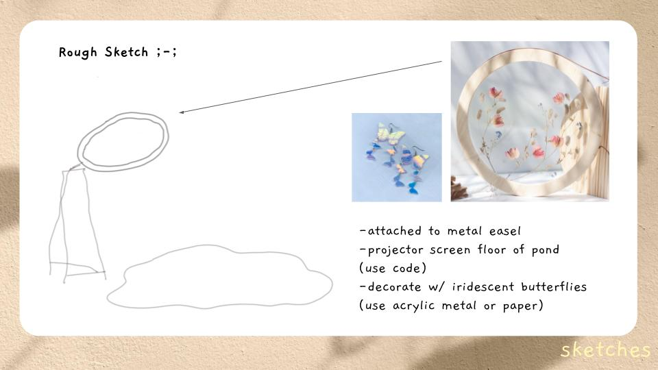
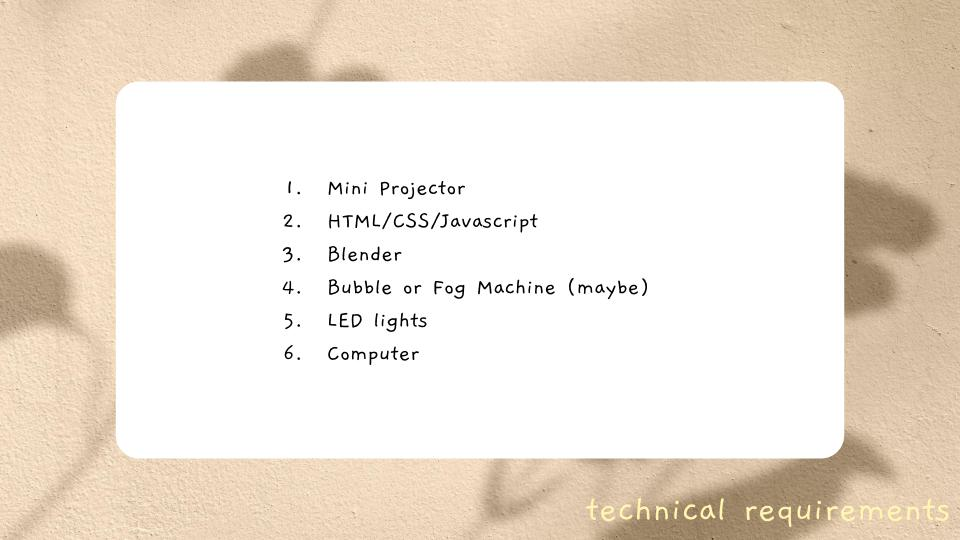
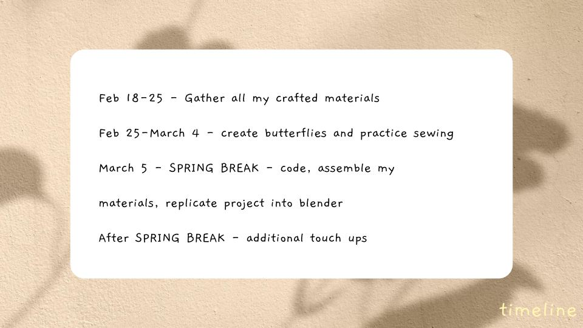
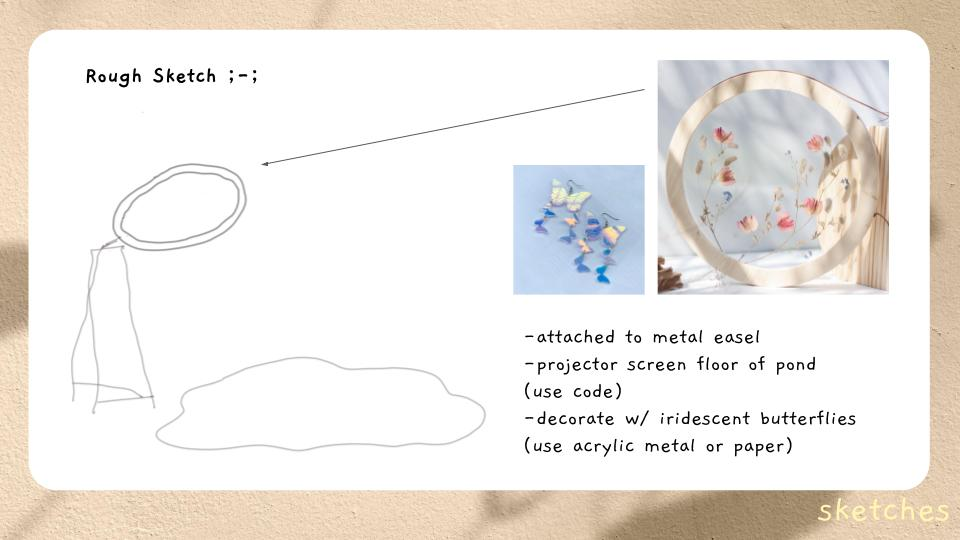
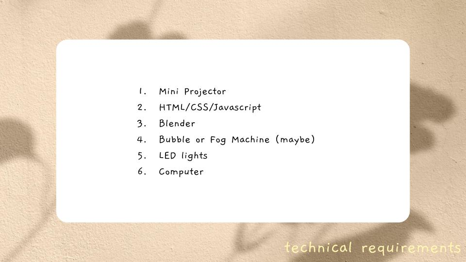
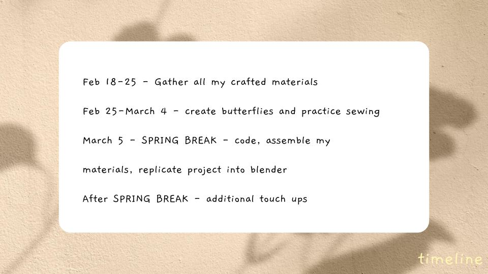

I follow the sight of small, rapid wings leading me to a mysterious, yet enchanting place. My ears perked up when I heard someone showering?!? After a long debate, I decided what the heck and saw what was going on. To my surprise, before me was an easel stand holding a mandala-shaped round frame that resembled a shower head. Around the objects are colorful butterflies swarming around, acting like raindrops falling from the sky. I just entered the Butterfly Shower and let my problems go away.
Butterfly Shower is an abstract shower that showcases the vitality of recharging from harsh reality. I am inspired by the cottage-core aesthetic, so I wanted to emphasize simplicity and soft peacefulness. This is a mixed-media project that handles both craftsmanship and digital because it crosses paths between nature and technology. The installation showcases an easel stand that holds a round frame with iridescent butterflies. The butterflies represent beauty, fragility, and change, encouraging us to open our hearts and minds. The digital aspect of this piece is a video projection of water caustics that flows seamlessly onto the tulle fabric. Finally, the sound of running water serves the purpose of clearing your overflowing mind.
Vulnerability doesn’t always mean you are weak. It takes time to heal from harsh environments or high expectations. So, if you are going through tough times, don’t be afraid to enter the Butterfly Shower.
 




